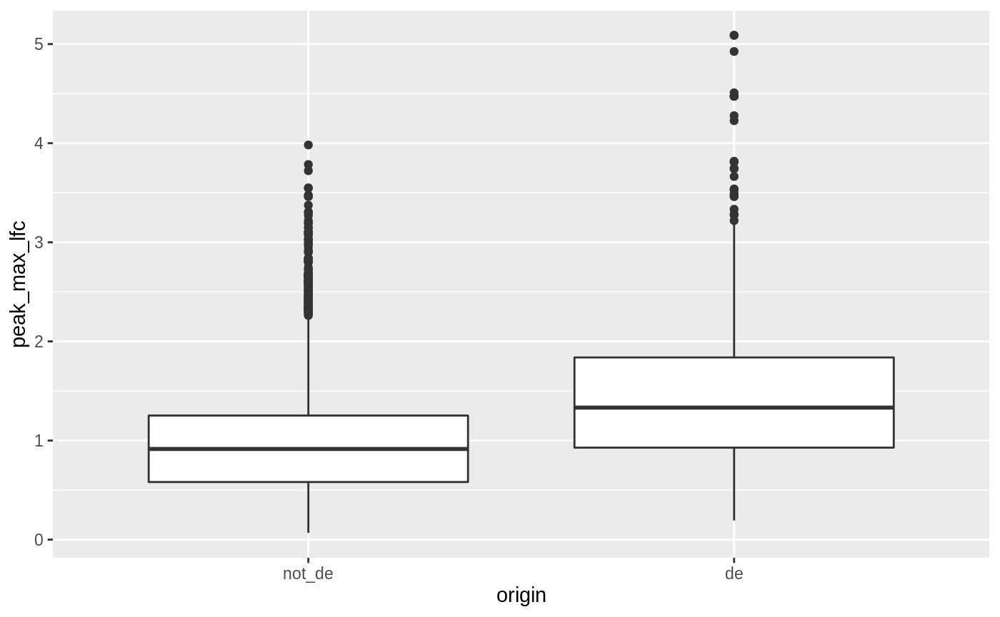
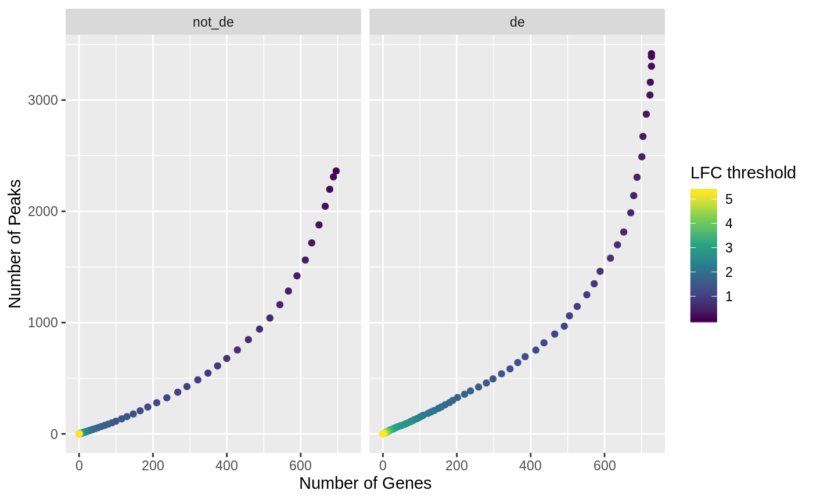

Fluent genomics with plyranges and tximeta
Stuart Lee, Michael Lawrence, Michael Love
Source:vignettes/fluentGenomics.Rmd
fluentGenomics.RmdAbstract
We construct a simple workflow for fluent genomics data analysis using the R/Biocondcutor ecosystem. This involves three core steps: import the data into an appropriate abstraction, model the data with respect to the biological questions of interest, and transform the results with respect to their underlying genomic coordinates. Here we show how to implement these steps to integrate published RNA-seq and ATAC-seq experiments on macrophage cell lines. Using tximeta, we import RNA-seq transcript quantifications into an analysis-ready data structure, called the SummarizedExperiment, that contains the ranges of the reference transcripts and metadata on their provenance. Using SummarizedExperiments to represent the ATAC-seq and RNA-seq data, we model differentially accessible (DA) chromatin peaks and differentially expressed (DE) genes with existing Bioconductor packages. Using plyranges we then transform the results to see if there is an enrichment of DE genes nearby DA peaks by finding overlaps and aggregating over log-fold change thresholds. The combination of these packages and their integration with the Bioconductor ecosystem provides a coherent framework for analysts to iteratively and reproducibly explore their biological data.Introduction
In this workflow, we examine a subset of the RNA-seq and ATAC-seq data from Alasoo et al. (2018), a study that involved treatment of macrophage cell lines from a number of human donors with interferon (IFN) gamma, Salmonella infection, or both treatments combined. Alasoo et al. (2018) examined gene expression and chromatin accessibility in a subset of 86 successfully differentiated induced pluripotent stem cells (iPSC) lines, and examined baseline quantitative trait loci (QTL) and response QTL for chromatin accessibility and gene expression. The authors found that many of the stimulus-specific expression QTL were already detectable as chromatin QTL in naive cells, and futher hypothesize about the nature and role of transcription factors implicated in the response to stimulus.
In this workflow, we will perform a much simpler analysis than the one found in Alasoo et al. (2018), using their publicly available RNA-seq and ATAC-seq data (ignoring the genotypes). We will examine the effect of IFNg stimulation on gene expression and chromatin accessibility, and look to see if there is an enrichment of differentially accessible (DA) ATAC-seq peaks in the vicinity of differentially expressed (DE) genes. This is plausible, as the transcriptomic response to IFNg stimulation may be mediated through binding of regulatory proteins to accessible regions, and this binding may increase the accessibility of those regions such that it can be detected by ATAC-seq.
Throughout the workflow, we will use existing Bioconductor infrastructure to understand these datasets. In particular, we will emphasize the use of the Bioconductor packages plyranges and tximeta. The first package is be used to perform easily-readable transformations of data tied to genomic ranges, e.g. shifts, windows, overlaps, etc. The plyranges package is described by Lee, Cook, and Lawrence (2019), and leverage underlying range operations described by Lawrence (2013). The second package described by Love et al. (2019) is used to read RNA-seq quantification into R/Bioconductor, such that the transcript ranges and their provenance are automatically attached to an object containing the quantification data and the differential expression results.
Experimental Data
The data used in this workflow is available from two packages: the macrophage Bioconductor ExperimentData package and from the workflow package fluentGenomics.
The macrophage package contains RNA-seq quantification from 24 RNA-seq samples, a subset of the RNA-seq samples generated and analyzed by Alasoo et al. (2018). The paired-end reads were quantified using Salmon (Patro et al. 2017), using the Gencode 29 human reference transcripts (Frankish, GENCODE-consoritum, and Flicek 2018). For more details on quantification, and the exact code used, consult the vignette of the macrophage package. The package also contains the Snakemake file that was used to distribute the Salmon quantification jobs on a cluster (Köster and Rahmann 2012).
The fluentGenomics package contains functionality to download and generate a cached SummarizedExperiment object from the normalized ATAC-seq data provided by Alasoo and Gaffney (2017). This object contains all 145 ATAC-seq samples across all experimental conditions as analyzed by Alasoo et al. (2018). The data can be also be downloaded directly from the Zenodo deposition.
The following code loads the path to the cached data file, or if it is not present will create the cache and generate a SummarizedExperiment using the the BiocFileCache package (Shepherd and Morgan 2019).
We can then read the cached file and assign it to an object called atac. Note that this step is not strictly necessary to run the workflow.
A precise description of how we obtained this SummarizedExperiment object can be found in section @ref(atac).
Import Data as a SummarizedExperiment
Using tximeta to import RNA-seq quantification data
First, we specify a directory dir, where the quantification files are stored. You could simply specify this directory with:
where the path is relative to your current R session. However, in this case we have distributed the files in the macrophage package. The relevant directory and associated files can be located using system.file.
Information about the experiment is contained in the coldata.csv file. We leverage the dplyr and readr packages (as part of the tidyverse) to read this file into R (Wickham et al. 2019). We will see later that plyranges extends these packages to accommodate genomic ranges.
##
## Attaching package: 'dplyr'## The following objects are masked from 'package:stats':
##
## filter, lag## The following objects are masked from 'package:base':
##
## intersect, setdiff, setequal, unionlibrary(readr)
colfile <- file.path(dir, "coldata.csv")
coldata <- read_csv(colfile) %>%
dplyr::select(
names,
id = sample_id,
line = line_id,
condition = condition_name
) %>%
dplyr::mutate(
files = file.path(dir, "quants", names, "quant.sf.gz"),
line = factor(line),
condition = relevel(factor(condition), "naive")
)## Parsed with column specification:
## cols(
## names = col_character(),
## sample_id = col_character(),
## line_id = col_character(),
## replicate = col_double(),
## condition_name = col_character(),
## macrophage_harvest = col_character(),
## salmonella_date = col_character(),
## ng_ul_mean = col_double(),
## rna_extraction = col_character(),
## rna_submit = col_character(),
## library_pool = col_character(),
## chemistry = col_character(),
## rna_auto = col_double()
## )## # A tibble: 24 x 5
## names id line condition files
## <chr> <chr> <fct> <fct> <chr>
## 1 SAMEA1038… diku_A diku… naive /home/travis/R/Library/macrophage/extdata…
## 2 SAMEA1038… diku_B diku… IFNg /home/travis/R/Library/macrophage/extdata…
## 3 SAMEA1038… diku_C diku… SL1344 /home/travis/R/Library/macrophage/extdata…
## 4 SAMEA1038… diku_D diku… IFNg_SL13… /home/travis/R/Library/macrophage/extdata…
## 5 SAMEA1038… eiwy_A eiwy… naive /home/travis/R/Library/macrophage/extdata…
## 6 SAMEA1038… eiwy_B eiwy… IFNg /home/travis/R/Library/macrophage/extdata…
## 7 SAMEA1038… eiwy_C eiwy… SL1344 /home/travis/R/Library/macrophage/extdata…
## 8 SAMEA1038… eiwy_D eiwy… IFNg_SL13… /home/travis/R/Library/macrophage/extdata…
## 9 SAMEA1038… fikt_A fikt… naive /home/travis/R/Library/macrophage/extdata…
## 10 SAMEA1038… fikt_B fikt… IFNg /home/travis/R/Library/macrophage/extdata…
## # … with 14 more rowsAfter we have read the coldata.csv file, we select relevant columns from this table, create a new column called files, and transform the existing line and condition columns into factors. In the case of condition, we specify the “naive” cell line as the reference level. The files column points to the quantifications for each observation - these files have been gzipped, but would typically not have the ‘gz’ ending if used from salmon directly. One other thing to note is the use of the pipe operator,%>%, which can be read as “then”, i.e. first read the data, then select columns, then mutate them.
Now we have a data.frame summarizing the experimental design and the locations of the quantifications. The following lines of code do a lot of work for the analyst: importing the RNA-seq quantification (dropping inferential replicates in this case), locating the relevant reference transcriptome, attaching the transcript ranges to the data, and fetching genome information. Inferential replicates are especially useful for performing transcript-level analysis, but here we will use a point estimate for the per-gene counts and perform gene-level analysis.
The result is a SummarizedExperiment object.
suppressPackageStartupMessages(library(SummarizedExperiment))
library(tximeta)
se <- tximeta(coldata, dropInfReps=TRUE)## importing quantifications## reading in files with read_tsv## 1 2 3 4 5 6 7 8 9 10 11 12 13 14 15 16 17 18 19 20 21 22 23 24
## found matching linked transcriptome:
## [ GENCODE - Homo sapiens - release 29 ]
## building TxDb with 'GenomicFeatures' package
## Import genomic features from the file as a GRanges object ... OK
## Prepare the 'metadata' data frame ... OK
## Make the TxDb object ...## Warning in .get_cds_IDX(mcols0$type, mcols0$phase): The "phase" metadata column contains non-NA values for features of type
## stop_codon. This information was ignored.## OK
## generating transcript ranges
## fetching genome info for GENCODE## Warning in file(file, "rt"): cannot open URL 'ftp://
## ftp.ncbi.nlm.nih.gov/genomes/all/GCF/000/001/405/GCF_000001405.26_GRCh38/
## GCF_000001405.26_GRCh38_assembly_report.txt': FTP status was '421 Service not
## available, closing control connection'## Error in file(file, "rt") :
## cannot open the connection to 'ftp://ftp.ncbi.nlm.nih.gov/genomes/all/GCF/000/001/405/GCF_000001405.26_GRCh38/GCF_000001405.26_GRCh38_assembly_report.txt'## class: RangedSummarizedExperiment
## dim: 205870 24
## metadata(6): tximetaInfo quantInfo ... txomeInfo txdbInfo
## assays(3): counts abundance length
## rownames(205870): ENST00000456328.2 ENST00000450305.2 ...
## ENST00000387460.2 ENST00000387461.2
## rowData names(3): tx_id gene_id tx_name
## colnames(24): SAMEA103885102 SAMEA103885347 ... SAMEA103885308
## SAMEA103884949
## colData names(4): names id line conditionOn a machine with a working internet connection, the above command works without any extra steps, as the tximeta function obtains any necessary metadata via FTP, unless it is already cached locally. The tximeta package can also be used without an internet connection, in this case the linked transcriptome can be created directly from a Salmon index and gtf.
makeLinkedTxome(
indexDir=file.path(dir, "gencode.v29_salmon_0.12.0"),
source="Gencode",
organism="Homo sapiens",
release="29",
genome="GRCh38",
fasta="ftp://ftp.ebi.ac.uk/pub/databases/gencode/Gencode_human/release_29/gencode.v29.transcripts.fa.gz",
gtf=file.path(dir, "gencode.v29.annotation.gtf.gz"), # local version
write=FALSE
)Because tximeta knows the correct reference transcriptome, we can ask tximeta to summarize the transcript-level data to the gene level using the methods of Soneson, Love, and Robinson (2015).
## loading existing TxDb created: 2020-01-12 13:13:09## Loading required package: GenomicFeatures## Loading required package: AnnotationDbi##
## Attaching package: 'AnnotationDbi'## The following object is masked from 'package:dplyr':
##
## select## obtaining transcript-to-gene mapping from database## generating gene ranges## summarizing abundance## summarizing counts## summarizing lengthImporting ATAC-seq data as a SummarizedExperiment object
The SummarizedExperiment object containing ATAC-seq peaks can be created from the following tab-delimited files from Alasoo and Gaffney (2017):
- The sample metadata:
ATAC_sample_metadata.txt.gz(<1M) - The matrix of normalized read counts:
ATAC_cqn_matrix.txt.gz(109M) - The annotated peaks:
ATAC_peak_metadata.txt.gz(5.6M)
To begin we read in the sample metadata, following similar steps to those we used to generate the coldata data.frame for the RNA-seq experiment:
atac_coldata <- read_tsv("ATAC_sample_metadata.txt.gz") %>%
select(
sample_id,
donor,
condition = condition_name
) %>%
mutate(condition = relevel(factor(condition), "naive"))The ATAC-seq counts have already been normalized with cqn (Hansen, Irizarry, and Wu 2012) and log2 transformed. Loading the cqn-normalized matrix of log2 transformed read counts takes ~30 seconds and loads an object of ~370 Mb. We set the column names so that the first column contains the rownames of the matrix, and the remaining columns are the sample identities from the atac_coldata object.
atac_mat <- read_tsv("ATAC_cqn_matrix.txt.gz",
skip = 1,
col_names =c("rownames", atac_coldata[["sample_id"]]))
rownames <- atac_mat[["rownames"]]
atac_mat <- as.matrix(atac_mat[,-1])
rownames(atac_mat) <- rownamesWe read in the peak metadata (locations in the genome), and convert it to a GRanges object. The as_granges() function automatically converts the data.frame into a GRanges object, from that result, we extract the peak_id column and set the genome information to the build “GRCh38”. We know this from the Zenodo entry.
library(plyranges)
peaks_df <- read_tsv("ATAC_peak_metadata.txt.gz",
col_types = c("cidciicdc")
)
peaks_gr <- peaks_df %>%
as_granges(seqnames = chr) %>%
select(peak_id=gene_id) %>%
set_genome_info(genome = "GRCh38")Finally, we construct a SummarizedExperiment object. We place the matrix into the assays slot as a named list, the annotated peaks into the row-wise ranges slot, and the sample metadata into the column-wise data slot:
Model
RNA-seq differential gene expression analysis
We can easily run a differential expression analysis with DESeq2 using the following code chunks (Love, Huber, and Anders 2014). The design formula indicates that we want to control for the donor baselines (line) and test for differences in gene expression on the condition. For a more comprehensive discussion of DE workflows in Bioconductor see Love et al. (2016) and Law et al. (2018).
## using counts and average transcript lengths from tximeta# filter out lowly expressed genes
# at least 10 counts in at least 6 samples
keep <- rowSums(counts(dds) >= 10) >= 6
dds <- dds[keep,]The model is fit with the following line of code:
## estimating size factors## using 'avgTxLength' from assays(dds), correcting for library size## estimating dispersions## gene-wise dispersion estimates## mean-dispersion relationship## final dispersion estimates## fitting model and testingBelow we set the contrasts on the condition variable, indicating we are estimating log2 fold changes of IFNg stimulated cell lines against naive cell lines. We are interested in log fold changes greater than 1 at a false discovery rate at of 1%.
To see the results of the expression analysis, we can generate a summary table and an MA plot:
##
## out of 17806 with nonzero total read count
## adjusted p-value < 0.01
## LFC > 1.00 (up) : 502, 2.8%
## LFC < -1.00 (down) : 247, 1.4%
## outliers [1] : 0, 0%
## low counts [2] : 0, 0%
## (mean count < 3)
## [1] see 'cooksCutoff' argument of ?results
## [2] see 'independentFiltering' argument of ?results
We now output the results as a GRanges object, due to the conventions of plyranges we construct a new column called gene_id from the row names of the results. Each row now contains the genomic region (seqnames, start, end, strand) along with corresponding metadata columns (the gene_id and the results of the test). Note that tximeta has correctly identified the reference genome as “hg38”, and this has also been added to the GRanges along the results columns. This kind of book-keeping is vital once overlap operations are performed to ensure that plyranges is not comparing across incompatible genomes.
suppressPackageStartupMessages(library(plyranges))
de_genes <- results(dds,
contrast=c("condition","IFNg","naive"),
lfcThreshold=1,
format="GRanges") %>%
names_to_column("gene_id")
de_genes## GRanges object with 17806 ranges and 7 metadata columns:
## seqnames ranges strand | gene_id baseMean
## <Rle> <IRanges> <Rle> | <character> <numeric>
## [1] chrX 100627109-100639991 - | ENSG00000000003.14 171.571
## [2] chr20 50934867-50958555 - | ENSG00000000419.12 967.751
## [3] chr1 169849631-169894267 - | ENSG00000000457.13 682.433
## [4] chr1 169662007-169854080 + | ENSG00000000460.16 262.963
## [5] chr1 27612064-27635277 - | ENSG00000000938.12 2660.102
## ... ... ... ... . ... ...
## [17802] chr10 84167228-84172093 - | ENSG00000285972.1 10.04746
## [17803] chr6 63572012-63583587 + | ENSG00000285976.1 4586.34617
## [17804] chr16 57177349-57181390 + | ENSG00000285979.1 14.29653
## [17805] chr8 103398658-103501895 - | ENSG00000285982.1 27.76296
## [17806] chr10 12563151-12567351 + | ENSG00000285994.1 6.60409
## log2FoldChange lfcSE stat pvalue padj
## <numeric> <numeric> <numeric> <numeric> <numeric>
## [1] -0.2822450 0.3005710 0.00000 1.0000000 1.000000
## [2] 0.0391223 0.0859708 0.00000 1.0000000 1.000000
## [3] 1.2846179 0.1969067 1.44545 0.1483329 1.000000
## [4] -1.4718762 0.2186916 -2.15772 0.0309493 0.409728
## [5] 0.6754781 0.2360530 0.00000 1.0000000 1.000000
## ... ... ... ... ... ...
## [17802] 0.5484518 0.444319 0 1 1
## [17803] -0.0339296 0.188005 0 1 1
## [17804] 0.3123477 0.522700 0 1 1
## [17805] 0.9945187 1.582373 0 1 1
## [17806] 0.2539975 0.595751 0 1 1
## -------
## seqinfo: 25 sequences (1 circular) from an unspecified genome; no seqlengthsFrom this, we can restrict the results to those that meet our FDR threshold and select (and rename) the metadata columns we’re interested in:
de_genes <- de_genes %>%
filter(padj < 0.01) %>%
select(gene_id, de_log2FC = log2FoldChange, de_padj = padj)We now wish to extract genes for which we could not reject the null hypothesis (we select based on an un-adjusted p-value larger than 0.1 for example). We must re-run results because we don’t want to use an lfcThreshold this time. For brevity we will label these genes as other_genes, and later on we will use these for comparison with our de_genes set.
ATAC-seq peak differential abundance analysis
The following section describes the process we have used for generating a GRanges object of differential peaks from the ATAC-seq data in Alasoo et al. (2018).
The code chunks for the remainder of this section are not run.
For assessing differential accessibility, we run limma (Smyth 2004), and generate the a summary of log fold changes and adjusted p-values for the peaks:
library(limma)
design <- model.matrix(~donor + condition, colData(atac))
fit <- lmFit(assay(atac), design)
fit <- eBayes(fit)
idx <- which(colnames(fit$coefficients) == "conditionIFNg")
tt <- topTable(fit, coef=idx, sort.by="none", n=nrow(atac))We now take the rowRanges of the SummarizedExperiment and attach the LFC and adjusted p-value from limma, so that we can consider the overlap with differential expression. Note that we set the genome build to “hg38” and restyle the chromosome information to use the “UCSC” style.
atac_peaks <- rowRanges(atac) %>%
remove_names() %>%
mutate(
da_log2FC = tt$logFC,
da_padj = tt$adj.P.Val
) %>%
set_genome_info(genome = "hg38")
seqlevelsStyle(atac_peaks) <- "UCSC"The final GRanges object containing the DA peaks is included in the workflow package and can be loaded as follows:
## GRanges object with 296220 ranges and 3 metadata columns:
## seqnames ranges strand | peak_id da_log2FC
## <Rle> <IRanges> <Rle> | <character> <numeric>
## [1] chr1 9979-10668 * | ATAC_peak_1 0.266185
## [2] chr1 10939-11473 * | ATAC_peak_2 0.322177
## [3] chr1 15505-15729 * | ATAC_peak_3 -0.574160
## [4] chr1 21148-21481 * | ATAC_peak_4 -1.147066
## [5] chr1 21864-22067 * | ATAC_peak_5 -0.896143
## ... ... ... ... . ... ...
## [296216] chrX 155896572-155896835 * | ATAC_peak_296216 -0.834629
## [296217] chrX 155958507-155958646 * | ATAC_peak_296217 -0.147537
## [296218] chrX 156016760-156016975 * | ATAC_peak_296218 -0.609732
## [296219] chrX 156028551-156029422 * | ATAC_peak_296219 -0.347678
## [296220] chrX 156030135-156030785 * | ATAC_peak_296220 0.492442
## da_padj
## <numeric>
## [1] 9.10673e-05
## [2] 2.03435e-05
## [3] 3.41708e-08
## [4] 8.22299e-26
## [5] 4.79453e-11
## ... ...
## [296216] 1.33546e-11
## [296217] 3.13015e-01
## [296218] 3.62339e-09
## [296219] 6.94823e-06
## [296220] 7.07664e-13
## -------
## seqinfo: 23 sequences from hg38 genome; no seqlengthsTransform
Finding overlaps with plyranges
We have already used plyranges a number of times above, to filter, mutate and select on GRanges objects, as well as ensuring the correct genome annotation and style has been used.
For the overlap analysis, we filter the annotated peaks to have a nominal FDR bound of 1%.
We now have GRanges objects that contain DE genes, genes without strong signal of DE, and DA peaks. We are ready to perform our original aim and answer the question: is there an enrichment of DA ATAC-seq peaks in the vicinity of DE genes?
Down sampling non-differentially expressed genes
As plyranges is built on top of dplyr it implements methods for many of it’s verbs for GRanges objects. Here we can use, slice to randomly sample the rows of the other_genes. The sample.int function will generate random samples of size equal to the number of DE-genes from the number of rows in other_genes:
## GRanges object with 749 ranges and 3 metadata columns:
## seqnames ranges strand | gene_id de_log2FC
## <Rle> <IRanges> <Rle> | <character> <numeric>
## [1] chr6 158232236-158511828 + | ENSG00000130338.12 0.00366373
## [2] chr3 32105689-32168713 + | ENSG00000152642.10 -0.31904728
## [3] chr2 64453969-64461381 + | ENSG00000119862.12 0.36318376
## [4] chr14 76151916-76254342 + | ENSG00000089916.17 -0.18341183
## [5] chr17 7012635-7017520 + | ENSG00000161939.19 0.49907766
## ... ... ... ... . ... ...
## [745] chrX 154379197-154381523 + | ENSG00000102119.10 -0.16257338
## [746] chr1 6624866-6635586 + | ENSG00000041988.15 0.15754432
## [747] chr19 4444999-4457822 - | ENSG00000167671.11 0.00173181
## [748] chr16 57447425-57461275 + | ENSG00000088682.13 0.01315355
## [749] chr13 48389567-48444704 - | ENSG00000139679.15 0.21176792
## de_padj
## <numeric>
## [1] 0.991572
## [2] 0.412507
## [3] 0.704881
## [4] 0.297062
## [5] 0.439643
## ... ...
## [745] 0.281674
## [746] 0.548696
## [747] 0.993378
## [748] 0.958482
## [749] 0.550456
## -------
## seqinfo: 25 sequences (1 circular) from an unspecified genome; no seqlengthsWe can repeat this many times to create many samples via replicate:
# set a seed for the results
set.seed(2019-08-02)
boot_genes <- replicate(10,
slice(other_genes, sample.int(n(), size)),
simplify = FALSE)This creates a list of GRanges objects as a list, we can bind these together using the bind_ranges function. This function creates a new column called “resample” on the result that identifies each of the input GRanges objects:
Similarly, we can then combine the boot_genes GRanges, with the DE GRanges object. As the resample column was not present on the DE GRanges object, this is given a missing value which we recode to a 0 using mutate()
all_genes <- bind_ranges(
de=de_genes,
not_de = boot_genes,
.id="origin"
) %>%
mutate(
origin = factor(origin, c("not_de", "de")),
resample = ifelse(is.na(resample), 0L, as.integer(resample))
)
all_genes## GRanges object with 8239 ranges and 5 metadata columns:
## seqnames ranges strand | gene_id de_log2FC
## <Rle> <IRanges> <Rle> | <character> <numeric>
## [1] chr1 196651878-196747504 + | ENSG00000000971.15 4.98711
## [2] chr6 46129993-46146699 + | ENSG00000001561.6 1.92722
## [3] chr4 17577192-17607972 + | ENSG00000002549.12 2.93373
## [4] chr7 150800403-150805120 + | ENSG00000002933.8 3.16722
## [5] chr4 15778275-15853230 + | ENSG00000004468.12 5.40894
## ... ... ... ... . ... ...
## [8235] chr3 72749277-72861914 - | ENSG00000144736.13 -0.3240580
## [8236] chr17 29566052-29573157 + | ENSG00000167543.15 0.0582049
## [8237] chr7 129225023-129430211 + | ENSG00000158467.16 0.2845564
## [8238] chr2 24029340-24049575 - | ENSG00000163026.11 -0.1305761
## [8239] chr16 1826941-1840207 + | ENSG00000180185.11 0.1739038
## de_padj resample origin
## <numeric> <integer> <factor>
## [1] 1.37057e-13 0 de
## [2] 3.17478e-05 0 de
## [3] 2.01310e-11 0 de
## [4] 1.07360e-08 0 de
## [5] 4.82905e-18 0 de
## ... ... ... ...
## [8235] 0.531385 10 not_de
## [8236] 0.681057 10 not_de
## [8237] 0.378275 10 not_de
## [8238] 0.601621 10 not_de
## [8239] 0.568644 10 not_de
## -------
## seqinfo: 25 sequences (1 circular) from an unspecified genome; no seqlengthsExpanding genomic coordinates around the transcription start site
Now we would like to modify our gene ranges so their width is 10 kilobases on either side of their transcription start site (TSS). There are many ways one could do this but we prefer an approach via the anchoring methods in plyranges. Because there is a mutual dependence between the start, end, width and strand of a GRanges object, we define anchors to fix one of start and end, while modifying the width. As an example to extract just the TSS, we can anchor by the 5’ end of the range and modify the width of the range to equal 1.
Anchoring by the 5’ end of a range will fix the end of negatively stranded ranges, and fix the start of positively stranded ranges.
We can then repeat the same pattern but this time using anchor_center() to tell plyranges that we are making the TSS the midpoint of a range that has total width of 20kb, or 10kb both upstream and downstream of the TSS.
Use overlap joins to find relative enrichment
We are now ready to compute overlaps between RNA-seq genes (our DE set and bootstrap samples) and the ATAC-seq peaks. In plyranges, overlaps are defined as joins between two GRanges objects: a left and a right GRanges object. In an overlap join, a match is any range on the left GRanges that is overlapped by the right GRanges. One powerful aspect of the overlap joins is that the result maintains all (metadata) columns from each of the left and right ranges which makes downstream summaries easy to compute.
To combine the DE genes with the DA peaks, we perform a left overlap join. This returns to us the all_genes ranges (potentially with duplication), but with the metadata columns from those overlapping DA peaks. For any gene that has no overlaps, the DA peak columns will have NA’s.
## GRanges object with 27591 ranges and 8 metadata columns:
## seqnames ranges strand | gene_id de_log2FC
## <Rle> <IRanges> <Rle> | <character> <numeric>
## [1] chr1 196641878-196661877 + | ENSG00000000971.15 4.98711
## [2] chr6 46119993-46139992 + | ENSG00000001561.6 1.92722
## [3] chr4 17567192-17587191 + | ENSG00000002549.12 2.93373
## [4] chr4 17567192-17587191 + | ENSG00000002549.12 2.93373
## [5] chr4 17567192-17587191 + | ENSG00000002549.12 2.93373
## ... ... ... ... . ... ...
## [27587] chr17 29556052-29576051 + | ENSG00000167543.15 0.0582049
## [27588] chr7 129215023-129235022 + | ENSG00000158467.16 0.2845564
## [27589] chr2 24039575-24059574 - | ENSG00000163026.11 -0.1305761
## [27590] chr16 1816941-1836940 + | ENSG00000180185.11 0.1739038
## [27591] chr16 1816941-1836940 + | ENSG00000180185.11 0.1739038
## de_padj resample origin peak_id da_log2FC da_padj
## <numeric> <integer> <factor> <character> <numeric> <numeric>
## [1] 1.37057e-13 0 de ATAC_peak_21236 -0.546582 1.15274e-04
## [2] 3.17478e-05 0 de ATAC_peak_231183 1.453297 9.73225e-17
## [3] 2.01310e-11 0 de ATAC_peak_193578 0.222371 3.00939e-11
## [4] 2.01310e-11 0 de ATAC_peak_193579 -0.281615 7.99889e-05
## [5] 2.01310e-11 0 de ATAC_peak_193580 0.673705 7.60043e-15
## ... ... ... ... ... ... ...
## [27587] 0.681057 10 not_de ATAC_peak_109304 0.211751 1.11290e-03
## [27588] 0.378275 10 not_de ATAC_peak_255700 0.177364 5.25385e-09
## [27589] 0.601621 10 not_de ATAC_peak_133247 -0.266266 1.01550e-07
## [27590] 0.568644 10 not_de ATAC_peak_97065 -0.405271 1.28055e-05
## [27591] 0.568644 10 not_de ATAC_peak_97067 0.289105 5.87370e-07
## -------
## seqinfo: 25 sequences (1 circular) from an unspecified genome; no seqlengthsNow we can ask, how many DA peaks are near DE genes relative to “other” non-DE genes? A gene may appear more than once in genes_olap_peaks, because multiple peaks may overlap a single gene, or because we have re-sampled the same gene more than once, or a combination of these two cases.
For each gene (that is the combination of chromosome, the start, end and strand), and the “origin” (DE vs not-DE) we can compute the distinct number of peaks for each gene and the maximum peak based on log FC. This is achieved via reduce_ranges_directed, which allows an aggregation to result in a GRanges object via merging neighboring genomic regions. The use of the directed suffix indicates we’re maintaining strand information. In this case, we are simply merging ranges via the groups we mentioned above. We also have to account for the number of resamples we have performed when counting if there are any peaks, to ensure we do not double count the same peak:
gene_peak_max_lfc <- genes_olap_peaks %>%
group_by(gene_id, origin) %>%
reduce_ranges_directed(
peak_count = sum(!is.na(da_padj)) / n_distinct(resample),
peak_max_lfc = max(abs(da_log2FC))
)We can then filter genes if they have any peaks and compare the peak fold changes between non-DE and DE genes using a boxplot:
library(ggplot2)
gene_peak_max_lfc %>%
filter(peak_count > 0) %>%
as.data.frame() %>%
ggplot(aes(origin, peak_max_lfc)) +
geom_boxplot()
In general, the DE genes have larger DA fold changes relative to the non-DE genes.
Next we examine how changes in DA LFC alter enrichment for DE genes. First, we want to know how the number of peaks within DE genes and non-DE genes change as we change threshold values on the peak LFC. As an example, we could compute this by arbitrarily chosen LFC thresholds as follows:
origin_peak_lfc <- genes_olap_peaks %>%
group_by(origin) %>%
summarize(
peak_count = sum(!is.na(da_padj)) / n_distinct(resample),
lfc1_peak_count =sum(abs(da_log2FC) > 1, na.rm=TRUE)/ n_distinct(resample),
lfc2_peak_count = sum(abs(da_log2FC) > 2, na.rm=TRUE)/ n_distinct(resample)
)
origin_peak_lfc## DataFrame with 2 rows and 4 columns
## origin peak_count lfc1_peak_count lfc2_peak_count
## <factor> <numeric> <numeric> <numeric>
## 1 not_de 2362.3 443.8 32.3
## 2 de 3416.0 1097.0 234.0Then for all variables except for the origin column we divide the first rows values by the second row, which will be the enrichment of peaks in DE genes compared to other genes. We see that the relative enrichment increases for a ‘larger’ LFC:
origin_peak_lfc %>%
as.data.frame() %>%
select(-origin) %>%
summarize_all(.funs = ~Reduce(function(x,y) y/x, .))## peak_count lfc1_peak_count lfc2_peak_count
## 1 1.446048 2.471834 7.244582Un-tidy but avoid .funs=~Reduce?
## peak_count lfc1_peak_count lfc2_peak_count
## 1.446048 2.471834 7.244582Due to the one-to-many mappings of DE genes to peaks, it is unknown if we have the same number of DE genes participating or less, as we increase the threshold on the peak LFC. This can be accounted for by grouping and aggregating twice. First, the number of peaks that meet the thresholds are computed within each gene, origin and resample group. Second, within the origin column, we compute the total number of peaks that meet the target threshold and the number of genes that have more than zero peaks (again averaging over the number of resamples).
genes_olap_peaks %>%
group_by(gene_id, origin, resample) %>%
reduce_ranges_directed(
lfc1 =sum(abs(da_log2FC) > 1, na.rm=TRUE),
lfc2= sum(abs(da_log2FC) > 2, na.rm=TRUE)
) %>%
group_by(origin) %>%
summarize(
lfc1_gene_count = sum(lfc1 > 0) / n_distinct(resample),
lfc1_peak_count = sum(lfc1) / n_distinct(resample),
lfc2_gene_count = sum(lfc2 > 0) / n_distinct(resample),
lfc2_peak_count = sum(lfc2) / n_distinct(resample)
)## DataFrame with 2 rows and 5 columns
## origin lfc1_gene_count lfc1_peak_count lfc2_gene_count lfc2_peak_count
## <factor> <numeric> <numeric> <numeric> <numeric>
## 1 not_de 301.4 443.8 30.4 32.3
## 2 de 515.0 1097.0 151.0 234.0To do this for many thresholds is cumbersome and would create a lot of duplicate code, instead we create a single function called count_above_threshold that accepts a GRanges object, and computes the peak count that meets the threshold.
count_if_above_threshold <- function(.data, threshold) {
reduce_ranges_directed(.data,
threshold = threshold,
value = sum(abs(da_log2FC) > threshold, na.rm = TRUE)
)
}The above function will compute the counts for any arbitrary threshold, now we need to apply it over possible LFC thresholds of interest. We choose a grid of one hundred thresholds based on the range of absolute LFC values in the da_peaks GRanges object:
thresholds <- da_peaks %>%
mutate(abs_lfc = abs(da_log2FC)) %>%
with(
seq(min(abs_lfc), max(abs_lfc), length.out = 100)
)The peaks are computed for each threshold value by applying the function count_if_above_threshold() on a GRanges object that has been grouped by the gene, origin and the number of resamples variables. This could be done easily in parallel with BiocParallel but here we compute everything serially .
by_gene_origin <- genes_olap_peaks %>%
group_by(gene_id, origin, resample)
genes_peak_all_thresholds <- bind_ranges(
lapply(thresholds, count_if_above_threshold, .data = by_gene_origin)
)This creates a very long GRanges object. To compute the peak and gene counts for each threshold, we apply the same summarization as before:
origin_peak_all_thresholds <- genes_peak_all_thresholds %>%
group_by(origin, threshold) %>%
summarize(
gene_count = sum(value > 0) / n_distinct(resample),
peak_count = sum(value) / n_distinct(resample)
)
origin_peak_all_thresholds## DataFrame with 200 rows and 4 columns
## origin threshold gene_count peak_count
## <factor> <numeric> <numeric> <numeric>
## 1 not_de 0.0658243 696.0 2362.2
## 2 not_de 0.1184840 688.7 2309.9
## 3 not_de 0.1711436 678.6 2197.8
## 4 not_de 0.2238033 666.4 2045.6
## 5 not_de 0.2764629 649.6 1878.0
## ... ... ... ... ...
## 196 de 5.06849 2 2
## 197 de 5.12115 0 0
## 198 de 5.17381 0 0
## 199 de 5.22647 0 0
## 200 de 5.27913 0 0Again we can compute the relative enrichment in LFCs in the same manner as before and visualize how enrichment changes as the threshold value increases:
peak_enrichment <- origin_peak_all_thresholds %>%
as.data.frame() %>%
group_by(threshold) %>%
summarize(enrichment = Reduce(function(x,y) y/x, peak_count))
peak_enrichment %>%
ggplot(aes(x = threshold, y = enrichment)) +
geom_line() +
labs(x = "logFC threshold", y = "Relative Enrichment")## Warning: Removed 4 rows containing missing values (geom_path).
We computed the sum of DA peaks near the DE genes, for increasing LFC thresholds on the accessibility change. As we increased the threshold, the number of total peaks went down (likewise the mean number of DA peaks per gene). It is also likely the number of DE genes with a DA peak nearby with such a large change went down - we can check this by plotting the number of DE genes against the number of DA peaks:
origin_peak_all_thresholds %>%
as.data.frame() %>%
ggplot(aes(x = gene_count,
y = peak_count,
color = threshold)) +
geom_point() +
scale_color_viridis_c() +
facet_wrap(~ origin) +
labs(x = "Number of Genes",
y = "Number of Peaks",
color = "LFC threshold")
Discussion
We have shown that using plyranges and tximeta (with support of Bioconductor and tidyverse packages) that we can fluently iterate through the biological data science workflow: from import, through to modelling, wrangling and visualization.
Using tximeta, we have shown that it is straightforward to import RNA-seq quantification data, and that by ensuring the proper metadata is associated with it, we can guard against any mistakes in downstream analyses.
Using plyranges, we have extended the principles of the tidyverse to genomic ranges, and that by design we can leverage those packages to understand data measured along the genome. We have shown that analyses performed with plyranges clearly and (relatively) concisely express their intent; in most cases the code we have written closely matches it’s description in English and clarifies how the features of a genomic range is being modified.
There are several further steps that would be interesting to perform in this analysis; for example, we could modify window size around the TSS to see how it effects enrichment and vary the cut-offs applied to FDR percentages applied to both the DE and DA peaks.
Software Availability
The workflow materials, including this article can be fully reproduced following the instructions found at the Github repository sa-lee/fluentGenomics. Moreover, the workflow and all downstream dependencies can be installed
This article and the analyses were performed with R (R Core Team 2019) using the rmarkdown (Allaire et al. 2019), knitr (Xie 2019, 2015) and BiocWorkflowTools (Smith, Oleś, and Huber 2018) packages.
Session Info
## R Under development (unstable) (2020-01-11 r77654)
## Platform: x86_64-pc-linux-gnu (64-bit)
## Running under: Ubuntu 16.04.6 LTS
##
## Matrix products: default
## BLAS: /home/travis/R-bin/lib/R/lib/libRblas.so
## LAPACK: /home/travis/R-bin/lib/R/lib/libRlapack.so
##
## locale:
## [1] LC_CTYPE=en_US.UTF-8 LC_NUMERIC=C
## [3] LC_TIME=en_US.UTF-8 LC_COLLATE=en_US.UTF-8
## [5] LC_MONETARY=en_US.UTF-8 LC_MESSAGES=en_US.UTF-8
## [7] LC_PAPER=en_US.UTF-8 LC_NAME=C
## [9] LC_ADDRESS=C LC_TELEPHONE=C
## [11] LC_MEASUREMENT=en_US.UTF-8 LC_IDENTIFICATION=C
##
## attached base packages:
## [1] parallel stats4 stats graphics grDevices utils datasets
## [8] methods base
##
## other attached packages:
## [1] ggplot2_3.2.1 plyranges_1.7.6
## [3] DESeq2_1.27.19 GenomicFeatures_1.39.2
## [5] AnnotationDbi_1.49.0 SummarizedExperiment_1.17.1
## [7] DelayedArray_0.13.2 BiocParallel_1.21.2
## [9] matrixStats_0.55.0 Biobase_2.47.2
## [11] GenomicRanges_1.39.1 GenomeInfoDb_1.23.2
## [13] IRanges_2.21.2 S4Vectors_0.25.9
## [15] BiocGenerics_0.33.0 readr_1.3.1
## [17] dplyr_0.8.3 tximeta_1.5.15
## [19] fluentGenomics_0.0.3
##
## loaded via a namespace (and not attached):
## [1] colorspace_1.4-1 rprojroot_1.3-2
## [3] XVector_0.27.0 fs_1.3.1
## [5] farver_2.0.1 bit64_0.9-7
## [7] interactiveDisplayBase_1.25.0 fansi_0.4.1
## [9] splines_4.0.0 tximport_1.15.5
## [11] geneplotter_1.65.0 knitr_1.26
## [13] zeallot_0.1.0 jsonlite_1.6
## [15] Rsamtools_2.3.2 annotate_1.65.0
## [17] dbplyr_1.4.2 shiny_1.4.0
## [19] BiocManager_1.30.10 compiler_4.0.0
## [21] httr_1.4.1 backports_1.1.5
## [23] assertthat_0.2.1 Matrix_1.2-18
## [25] fastmap_1.0.1 lazyeval_0.2.2
## [27] cli_2.0.1 later_1.0.0
## [29] htmltools_0.4.0 prettyunits_1.1.0
## [31] tools_4.0.0 gtable_0.3.0
## [33] glue_1.3.1 GenomeInfoDbData_1.2.2
## [35] rappdirs_0.3.1 Rcpp_1.0.3
## [37] pkgdown_1.4.1 vctrs_0.2.1
## [39] Biostrings_2.55.4 rtracklayer_1.47.0
## [41] xfun_0.11 stringr_1.4.0
## [43] mime_0.8 lifecycle_0.1.0
## [45] ensembldb_2.11.2 XML_3.98-1.20
## [47] AnnotationHub_2.19.3 zlibbioc_1.33.0
## [49] MASS_7.3-51.5 scales_1.1.0
## [51] hms_0.5.3 promises_1.1.0
## [53] ProtGenerics_1.19.3 AnnotationFilter_1.11.0
## [55] RColorBrewer_1.1-2 yaml_2.2.0
## [57] curl_4.3 memoise_1.1.0
## [59] biomaRt_2.43.1 stringi_1.4.5
## [61] RSQLite_2.2.0 BiocVersion_3.11.1
## [63] genefilter_1.69.0 desc_1.2.0
## [65] rlang_0.4.2 pkgconfig_2.0.3
## [67] bitops_1.0-6 evaluate_0.14
## [69] lattice_0.20-38 purrr_0.3.3
## [71] GenomicAlignments_1.23.1 labeling_0.3
## [73] bit_1.1-14 tidyselect_0.2.5
## [75] magrittr_1.5 bookdown_0.17
## [77] R6_2.4.1 DBI_1.1.0
## [79] pillar_1.4.3 withr_2.1.2
## [81] survival_3.1-8 RCurl_1.95-4.12
## [83] tibble_2.1.3 crayon_1.3.4
## [85] utf8_1.1.4 BiocFileCache_1.11.4
## [87] rmarkdown_2.0 progress_1.2.2
## [89] locfit_1.5-9.1 grid_4.0.0
## [91] blob_1.2.0 digest_0.6.23
## [93] xtable_1.8-4 httpuv_1.5.2
## [95] openssl_1.4.1 munsell_0.5.0
## [97] viridisLite_0.3.0 askpass_1.1Funding
SL is supported by an Australian Government Research Training Program (RTP) scholarship with a top up scholarship from CSL Limited.
MIL’s contribution is supported by NIH grant R01 HG009937.
I confirm that the funders had no role in study design, data collection and analysis, decision to publish, or preparation of the manuscript.
References
Alasoo, Kaur, and Daniel Gaffney. 2017. “Processed read counts from macrophage RNA-seq and ATAC-seq experiments.” Zenodo. https://doi.org/10.5281/zenodo.1188300.
Alasoo, K, J Rodrigues, S Mukhopadhyay, AJ Knights, AL Mann, K Kundu, HIPSCI-Consortium, C Hale, Dougan G, and DJ Gaffney. 2018. “Shared genetic effects on chromatin and gene expression indicate a role for enhancer priming in immune response.” Nature Genetics 50: 424–31. https://doi.org/10.1038/s41588-018-0046-7.
Allaire, JJ, Yihui Xie, Jonathan McPherson, Javier Luraschi, Kevin Ushey, Aron Atkins, Hadley Wickham, Joe Cheng, Winston Chang, and Richard Iannone. 2019. Rmarkdown: Dynamic Documents for R. https://github.com/rstudio/rmarkdown.
Frankish, A, GENCODE-consoritum, and P Flicek. 2018. “GENCODE reference annotation for the human and mouse genomes.” Nucleic Acids Research. https://doi.org/10.1093/nar/gky955.
Hansen, Kasper D., Rafael A. Irizarry, and Zhijin Wu. 2012. “Removing technical variability in RNA-seq data using condition quantile normalization.” Biostatistics 13 (2): 204–16. https://doi.org/10.1093/biostatistics/kxr054.
Köster, Johannes, and Sven Rahmann. 2012. “Snakemake—a scalable bioinformatics workflow engine.” Bioinformatics 28 (19): 2520–2. https://doi.org/10.1093/bioinformatics/bts480.
Law, Charity W, Monther Alhamdoosh, Shian Su, Xueyi Dong, Luyi Tian, Gordon K Smyth, and Matthew E Ritchie. 2018. “RNA-seq Analysis Is Easy as 1-2-3 with Limma, Glimma and edgeR.” F1000Res. 5 (1408). F1000 Research Limited: 1408. https://doi.org/10.12688/f1000research.9005.3.
Lawrence, Wolfgang AND Pagès, Michael AND Huber. 2013. “Software for Computing and Annotating Genomic Ranges.” PLOS Computational Biology 9 (8). Public Library of Science: 1–10. https://doi.org/10.1371/journal.pcbi.1003118.
Lee, Stuart, Dianne Cook, and Michael Lawrence. 2019. “Plyranges: A Grammar of Genomic Data Transformation.” Genome Biology 20 (1): 4. https://doi.org/10.1186/s13059-018-1597-8.
Love, Michael I, Simon Anders, Vladislav Kim, and Wolfgang Huber. 2016. “RNA-Seq Workflow: Gene-Level Exploratory Analysis and Differential Expression.” F1000Res. 4 (1070). F1000 Research Limited: 1070. https://doi.org/10.12688/f1000research.7035.2.
Love, Michael I., Wolfgang Huber, and Simon Anders. 2014. “Moderated estimation of fold change and dispersion for RNA-seq data with DESeq2.” Genome Biology 15 (12): 550. https://doi.org/10.1186/s13059-014-0550-8.
Love, Michael I, Charlotte Soneson, Peter F Hickey, Lisa K Johnson, N Tessa Pierce, Lori Shepherd, Martin Morgan, and Rob Patro. 2019. “Tximeta: Reference Sequence Checksums for Provenance Identification in RNA-seq.” bioRxiv, September, 777888. https://doi.org/10.1101/777888.
Patro, R, G Duggal, MI Love, RA Irizarry, and C Kingsford. 2017. “Salmon Provides Fast and Bias-Aware Quantification of Transcript Expression.” Nature Methods 14: 417–19. https://doi.org/10.1038/nmeth.4197.
R Core Team. 2019. R: A Language and Environment for Statistical Computing. Vienna, Austria: R Foundation for Statistical Computing. https://www.R-project.org/.
Shepherd, Lori, and Martin Morgan. 2019. BiocFileCache: Manage Files Across Sessions.
Smith, Mike L., Andrzej K. Oleś, and Wolfgang Huber. 2018. “Authoring Bioconductor Workflows with Biocworkflowtools [Version 1; Referees: 2 Approved with Reservations].” F1000Research, no. 7: 431. https://doi.org/10.12688/f1000research.14399.1.
Smyth, Gordon K. 2004. “Linear Models and Empirical Bayes Methods for Assessing Differential Expression in Microarray Experiments.” Statistical Applications in Genetics and Molecular Biology 3 (1).
Soneson, Charlotte, Michael I. Love, and Mark Robinson. 2015. “Differential analyses for RNA-seq: transcript-level estimates improve gene-level inferences.” F1000Research 4 (1521). https://doi.org/10.12688/f1000research.7563.1.
Wickham, Hadley, Mara Averick, Jennifer Bryan, Winston Chang, Lucy D’Agostino McGowan, Romain François, Garrett Grolemund, et al. 2019. “Welcome to the tidyverse.” Journal of Open Source Software 4 (43): 1686. https://doi.org/10.21105/joss.01686.
Xie, Yihui. 2015. Dynamic Documents with R and Knitr. 2nd ed. Boca Raton, Florida: Chapman; Hall/CRC. https://yihui.name/knitr/.
———. 2019. Knitr: A General-Purpose Package for Dynamic Report Generation in R. https://yihui.name/knitr/.